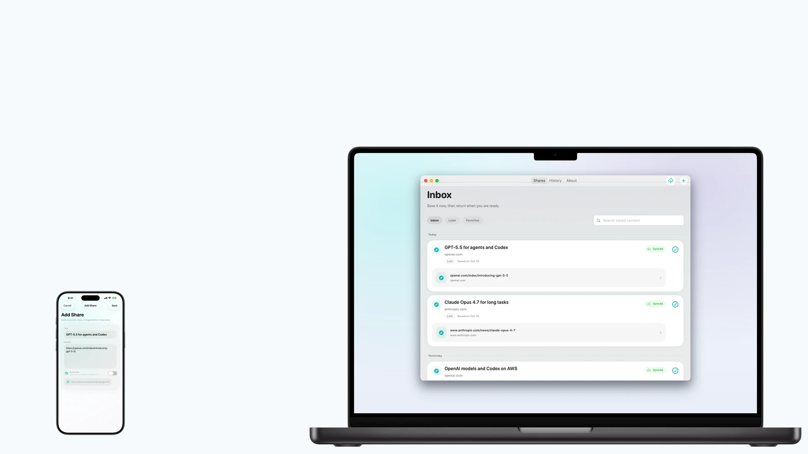
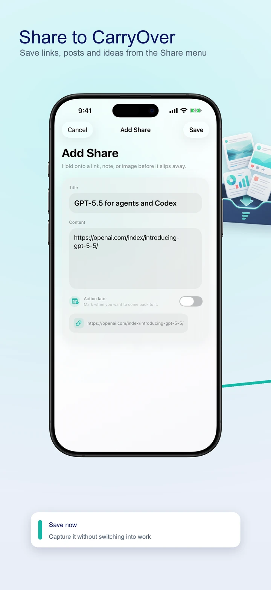
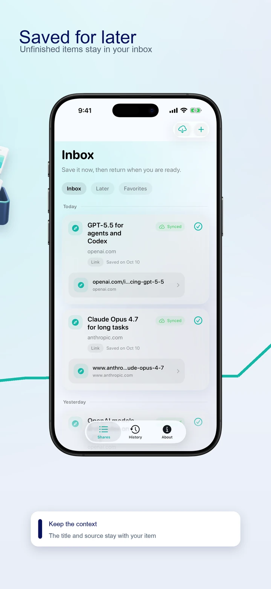
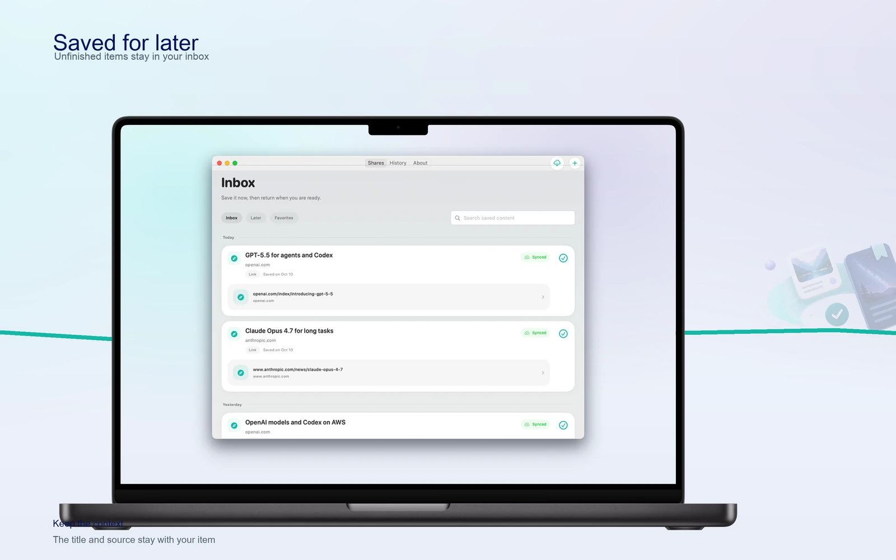

Share or write it down
Use the system Share menu in apps that share supported text, links or images. You can also add a note manually in CarryOver.

Capture now, action later
Save from the Share menu on your phone. Open it on Mac when you're ready to act.
For the current features, get CarryOver from the App Store. The direct Mac DMG has not yet been updated to this release.

Save links, posts and ideas from the Share menu

Unfinished items stay in your inbox

Open the source and continue when you're ready
Use the system Share menu in apps that share supported text, links or images. You can also add a note manually in CarryOver.
Unfinished items stay in your inbox regardless of age. Mark them done when you have actually handled them.
Search titles, saved text and source URLs in the Mac main window, in both your inbox and History.
Completed items move to History. Restore an item to the inbox when you need to pick it up again.
Set a date and time and allow system notifications. Tap the reminder to open the saved item and continue.
iCloud sync connects iPhone, iPad and Mac signed in to the same Apple Account. Network and iCloud conditions can delay syncing.
The free version allows up to three saves per day. A one-time Pro purchase removes the daily save limit. Check the App Store for the price in your region. Read help